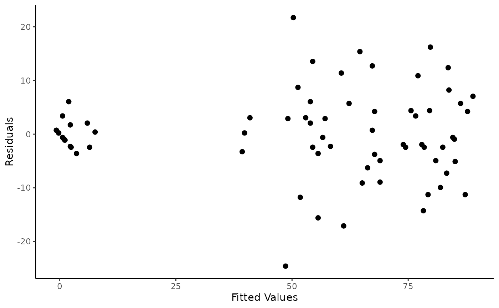

Example 4.3 from Experimental Design and Analysis for Tree Improvement
Source:R/Exam4.3.R
Exam4.3.RdExam4.3 presents the germination count data for 4 Pre-Treatments and 6 Seedlots.
References
E.R. Williams, C.E. Harwood and A.C. Matheson (2023). Experimental Design and Analysis for Tree Improvement. CSIRO Publishing (https://www.publish.csiro.au/book/3145/).
Author
Muhammad Yaseen (myaseen208@gmail.com)
Sami Ullah (samiullahuos@gmail.com)
Examples
library(car)
library(dae)
library(dplyr)
library(emmeans)
library(ggplot2)
library(lmerTest)
library(magrittr)
library(predictmeans)
data(DataExam4.3)
# Pg. 50
fm4.2 <-
aov(
formula =
percent ~ repl + contcomp + seedlot +
treat/contcomp + contcomp/seedlot +
treat/contcomp/seedlot
, data = DataExam4.3
)
# Pg. 54
anova(fm4.2)
#> Analysis of Variance Table
#>
#> Response: percent
#> Df Sum Sq Mean Sq F value Pr(>F)
#> repl 2 35 18 0.1804 0.8355379
#> contcomp 1 58542 58542 601.5217 < 2.2e-16 ***
#> seedlot 5 2894 579 5.9481 0.0002538 ***
#> treat 2 5300 2650 27.2295 1.576e-08 ***
#> contcomp:seedlot 5 1347 269 2.7682 0.0287571 *
#> contcomp:seedlot:treat 10 961 96 0.9876 0.4674993
#> Residuals 46 4477 97
#> ---
#> Signif. codes: 0 ‘***’ 0.001 ‘**’ 0.01 ‘*’ 0.05 ‘.’ 0.1 ‘ ’ 1
# Pg. 54
model.tables(x = fm4.2, type = "means")
#> Tables of means
#> Grand mean
#>
#> 51.38889
#>
#> repl
#> 1 2 3
#> 52.33 50.67 51.17
#> rep 24.00 24.00 24.00
#>
#> contcomp
#> Treated control
#> 67.85 2
#> rep 54.00 18
#>
#> seedlot
#> 18211 18212 18217 18248 18249 18265
#> 58 52.33 49 40.67 48.67 59.67
#> rep 12 12.00 12 12.00 12.00 12.00
#>
#> treat
#> nick bw&s control bw1min
#> 40.43 49.31 51.39 64.43
#> rep 18.00 18.00 18.00 18.00
#>
#> contcomp:seedlot
#> seedlot
#> contcomp 18211 18212 18217 18248 18249 18265
#> Treated 77.33 69.33 63.11 53.33 64.89 79.11
#> rep 9.00 9.00 9.00 9.00 9.00 9.00
#> control 0.00 1.33 6.67 2.67 0.00 1.33
#> rep 3.00 3.00 3.00 3.00 3.00 3.00
#>
#> contcomp:seedlot:treat
#> , , treat = nick
#>
#> seedlot
#> contcomp 18211 18212 18217 18248 18249 18265
#> Treated 65.33 54.67 57.33 40.00 49.33 74.67
#> rep 3.00 3.00 3.00 3.00 3.00 3.00
#> control
#> rep 0.00 0.00 0.00 0.00 0.00 0.00
#>
#> , , treat = bw&s
#>
#> seedlot
#> contcomp 18211 18212 18217 18248 18249 18265
#> Treated 78.67 68.00 54.67 52.00 61.33 80.00
#> rep 3.00 3.00 3.00 3.00 3.00 3.00
#> control
#> rep 0.00 0.00 0.00 0.00 0.00 0.00
#>
#> , , treat = control
#>
#> seedlot
#> contcomp 18211 18212 18217 18248 18249 18265
#> Treated
#> rep 0.00 0.00 0.00 0.00 0.00 0.00
#> control 0.00 1.33 6.67 2.67 0.00 1.33
#> rep 3.00 3.00 3.00 3.00 3.00 3.00
#>
#> , , treat = bw1min
#>
#> seedlot
#> contcomp 18211 18212 18217 18248 18249 18265
#> Treated 88.00 85.33 77.33 68.00 84.00 82.67
#> rep 3.00 3.00 3.00 3.00 3.00 3.00
#> control
#> rep 0.00 0.00 0.00 0.00 0.00 0.00
#>
emmeans(object = fm4.2, specs = ~ contcomp)
#> NOTE: A nesting structure was detected in the fitted model:
#> treat %in% contcomp
#> NOTE: Results may be misleading due to involvement in interactions
#> contcomp emmean SE df lower.CL upper.CL
#> Treated 67.9 1.34 46 65.15 70.55
#> control 2.0 2.33 46 -2.68 6.68
#>
#> Results are averaged over the levels of: repl, seedlot, treat
#> Confidence level used: 0.95
emmeans(object = fm4.2, specs = ~ seedlot)
#> NOTE: A nesting structure was detected in the fitted model:
#> treat %in% contcomp
#> NOTE: Results may be misleading due to involvement in interactions
#> seedlot emmean SE df lower.CL upper.CL
#> 18211 38.7 3.29 46 32.0 45.3
#> 18212 35.3 3.29 46 28.7 42.0
#> 18217 34.9 3.29 46 28.3 41.5
#> 18248 28.0 3.29 46 21.4 34.6
#> 18249 32.4 3.29 46 25.8 39.1
#> 18265 40.2 3.29 46 33.6 46.8
#>
#> Results are averaged over the levels of: repl, treat, contcomp
#> Confidence level used: 0.95
emmeans(object = fm4.2, specs = ~ contcomp + treat)
#> NOTE: A nesting structure was detected in the fitted model:
#> treat %in% contcomp
#> NOTE: Results may be misleading due to involvement in interactions
#> treat contcomp emmean SE df lower.CL upper.CL
#> nick Treated 56.9 2.33 46 52.21 61.57
#> bw&s Treated 65.8 2.33 46 61.10 70.46
#> bw1min Treated 80.9 2.33 46 76.21 85.57
#> control control 2.0 2.33 46 -2.68 6.68
#>
#> Results are averaged over the levels of: repl, seedlot
#> Confidence level used: 0.95
emmeans(object = fm4.2, specs = ~ contcomp + seedlot)
#> NOTE: A nesting structure was detected in the fitted model:
#> treat %in% contcomp
#> NOTE: Results may be misleading due to involvement in interactions
#> contcomp seedlot emmean SE df lower.CL upper.CL
#> Treated 18211 77.33 3.29 46 70.7 84.0
#> control 18211 0.00 5.70 46 -11.5 11.5
#> Treated 18212 69.33 3.29 46 62.7 76.0
#> control 18212 1.33 5.70 46 -10.1 12.8
#> Treated 18217 63.11 3.29 46 56.5 69.7
#> control 18217 6.67 5.70 46 -4.8 18.1
#> Treated 18248 53.33 3.29 46 46.7 60.0
#> control 18248 2.67 5.70 46 -8.8 14.1
#> Treated 18249 64.89 3.29 46 58.3 71.5
#> control 18249 0.00 5.70 46 -11.5 11.5
#> Treated 18265 79.11 3.29 46 72.5 85.7
#> control 18265 1.33 5.70 46 -10.1 12.8
#>
#> Results are averaged over the levels of: repl, treat
#> Confidence level used: 0.95
emmeans(object = fm4.2, specs = ~ contcomp + treat + seedlot)
#> NOTE: A nesting structure was detected in the fitted model:
#> treat %in% contcomp
#> treat contcomp seedlot emmean SE df lower.CL upper.CL
#> nick Treated 18211 65.33 5.7 46 53.9 76.8
#> bw&s Treated 18211 78.67 5.7 46 67.2 90.1
#> bw1min Treated 18211 88.00 5.7 46 76.5 99.5
#> control control 18211 0.00 5.7 46 -11.5 11.5
#> nick Treated 18212 54.67 5.7 46 43.2 66.1
#> bw&s Treated 18212 68.00 5.7 46 56.5 79.5
#> bw1min Treated 18212 85.33 5.7 46 73.9 96.8
#> control control 18212 1.33 5.7 46 -10.1 12.8
#> nick Treated 18217 57.33 5.7 46 45.9 68.8
#> bw&s Treated 18217 54.67 5.7 46 43.2 66.1
#> bw1min Treated 18217 77.33 5.7 46 65.9 88.8
#> control control 18217 6.67 5.7 46 -4.8 18.1
#> nick Treated 18248 40.00 5.7 46 28.5 51.5
#> bw&s Treated 18248 52.00 5.7 46 40.5 63.5
#> bw1min Treated 18248 68.00 5.7 46 56.5 79.5
#> control control 18248 2.67 5.7 46 -8.8 14.1
#> nick Treated 18249 49.33 5.7 46 37.9 60.8
#> bw&s Treated 18249 61.33 5.7 46 49.9 72.8
#> bw1min Treated 18249 84.00 5.7 46 72.5 95.5
#> control control 18249 0.00 5.7 46 -11.5 11.5
#> nick Treated 18265 74.67 5.7 46 63.2 86.1
#> bw&s Treated 18265 80.00 5.7 46 68.5 91.5
#> bw1min Treated 18265 82.67 5.7 46 71.2 94.1
#> control control 18265 1.33 5.7 46 -10.1 12.8
#>
#> Results are averaged over the levels of: repl
#> Confidence level used: 0.95
DataExam4.3 %>%
dplyr::group_by(treat, contcomp, seedlot) %>%
dplyr::summarize(Mean = mean(percent))
#> `summarise()` has grouped output by 'treat', 'contcomp'. You can override using
#> the `.groups` argument.
#> # A tibble: 24 × 4
#> # Groups: treat, contcomp [4]
#> treat contcomp seedlot Mean
#> <fct> <fct> <fct> <dbl>
#> 1 nick Treated 18211 65.3
#> 2 nick Treated 18212 54.7
#> 3 nick Treated 18217 57.3
#> 4 nick Treated 18248 40
#> 5 nick Treated 18249 49.3
#> 6 nick Treated 18265 74.7
#> 7 bw&s Treated 18211 78.7
#> 8 bw&s Treated 18212 68
#> 9 bw&s Treated 18217 54.7
#> 10 bw&s Treated 18248 52
#> # ℹ 14 more rows
RESFIT <-
data.frame(
residualvalue = residuals(fm4.2)
, fittedvalue = fitted.values(fm4.2)
)
ggplot(mapping = aes(
x = fitted.values(fm4.2)
, y = residuals(fm4.2))) +
geom_point(size = 2) +
labs(
x = "Fitted Values"
, y = "Residuals"
) +
theme_classic()
